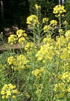

なのはなは（菜の花（葉））の生産量
いちばん多くとれる都道府県
なのはなはが日本でいちばん多くとれるのは三重県です。371 tで、全国（1,360 t）の27%を占めます。

| 順位 | 都道府県 | 収穫量 | 全国に占める割合 |
|---|---|---|---|
| 1位 | 三重県 | 371 t | 27% |
| 2位 | 東京都 | 233 t | 17% |
| 3位 | 新潟県 | 230 t | 17% |
この数字について
- 分類：アブラナ科
- 全国の収穫量：1,360 t
- この数字が表すもの：収穫量（畑や田でとれた重さ）
- 調査：地域特産野菜生産状況調査 令和4年産
- 31県分を調査（調査していない県は順位に入りません）